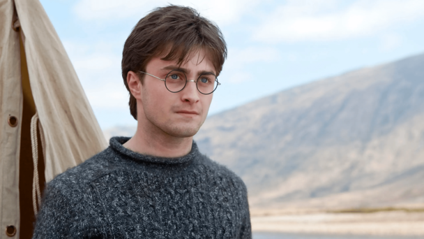
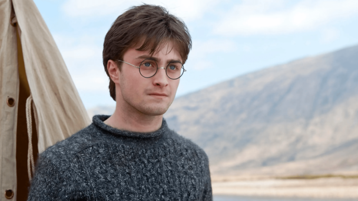

Emma Watson
Emma Charlotte Duerre Watson (nacida el 15 de abril de 1990 en París, Francia) es una actriz franco-británica. Se hizo especialmente conocida por su papel como Hermione Granger, uno de los tres protagonistas de la serie cinematográfica Harry Potter, basada en los libros de la escritora británica J. K. Rowling. Watson fue elegida para el papel de Hermione a la edad de nueve años, aunque hasta aquel momento solo había participado en obras de teatro escolares. Desde 2001 a 2011 ha aparecido en todas las entregas de Harry Potter. Su trabajo en la saga fue remunerado con varios galardones y unas ganancias de más de 10 millones de libras esterlinas. En 2007 anunció su participación en dos proyectos al margen de la serie de Harry Potter: la adaptación televisiva de la novela "Ballet Shoes" y la película de animación "Tale of Despereaux". "Ballet Shoes" fue estrenada el 26 de diciembre de 2007 —Boxing Day en el Reino Unido— por la BBC One con una audiencia de 5,2 millones de televidentes. The Tale of Despereaux se estrenó en diciembre de 2008. Emma nació en París, Francia, hija de Jacqueline Luesby y Chris Watson, dos abogados ingleses. Watson tiene una abuela francesa y vivió en París hasta la edad de cinco en que se trasladó junto a su madre y su hermano pequeño Alexander a Oxford, Inglaterra, tras el divorcio de sus padres. Hermione haciendo una pocion multijugos en su segundo año Desde los seis años, Watson había expresado su deseo de convertirse en actriz. A partir de los 10 años intervino en muchas obras teatrales escolares, entre las que se encuentran "Arthur: The Young Years" o "The Happy Prince". No tenía ningún tipo de experiencia profesional cuando se presentó a los castings de la que iba a ser la serie de Harry Potter. «No tenía ni idea del impacto que iba a tener la película», afirmó en 2007 en una entrevista en la revista Parade; «[si lo hubiera sabido] me habría sentido completamente abrumada». En 1999 comenzaron los castings para Harry Potter y la Piedra Filosofal, la adaptación cinematográfica del superventas homónimo de la novelista inglesa J. K. Rowling. La principal preocupación de los directores de casting era encontrar a los actores adecuados para interpretar los papeles del trío protagonista: Harry Potter y sus dos compañeros Hermione Granger y Ron Weasley, sus dos mejores amigos. Los encargados del casting encontraron a Watson a través de su profesora de teatro en Oxford y los productores quedaron gratamente impresionados por la confianza en sí misma que tenía la joven. Tras seis audiciones, el productor David Heyman les comunicó a Watson, Daniel Radcliffe y Rupert Grint, que habían sido seleccionados para interpretar a Hermione Granger, Harry Potter y Ron Weasley, respectivamente. La autora de la novela, Rowling, ya había mostrado su apoyo hacia Watson desde que vio su primera prueba. El debut de Watson como Hermione Granger llegó en 2001, con el estreno de Harry Potter y la Piedra Filosofal. La película batió récords de taquilla durante su primer fin de semana, siendo la producción más taquillera de ese año. La crítica elogió, mayoritariamente, el trabajo del joven trío protagonista, haciendo hincapié en la interpretación de Watson. El periódico inglés The Daily Telegraph describió su trabajo como «admirable», e I GN afirmó que «se adueñó de la función». Watson fue nominada a cinco premios por su trabajo, logrando elYoung Artist a la Mejor interpretación juvenil-Protagonista (Young Artist Award for Leading Young Actress).

 
